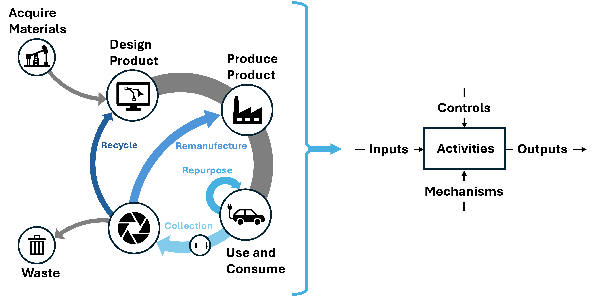

Traction battery recovery

Example pathways that enable the retention of resources, differentiating circular economies from linear economies. Figure adapted from Schumacher et al. (2023).
Purpose: Recovering valuable materials and extending the life of traction batteries are important steps to address the challenges of supply chain vulnerability and material sourcing difficulties. These recovery pathways are still in their early stages, with many challenges including the broad range of battery chemistries, low resource intensity and process efficiency for lithium recovery in recycling, and safety concerns from material handling.
To facilitate the coordination of battery circularity efforts and research, we introduce a reference model to outline the activities required to recover and treat end-of-life traction batteries.
Reference Model: The Traction Battery Recovery Model is adapted from the Production in a Circular Economy (CE) Model, which lays out five activities for manufacturing in a CE. This battery recovery model corresponds to the Treat at End of Life (activity A5) of the manufacturing CE model. This model describes the recovery steps within repurposing, remanufacturing, and recycling a traction battery. A simplified view of the model can be seen below.

Simplified view of Activities and Inputs, Outputs, Controls, and Mechanisms within the traction battery recovery model. This model provides descriptions of physical and data objects that may flow across various product life cycle stages.
The purpose of this model includes the following:
- Map out activities to recover traction batteries at end of use
- Provide clarity around the technical processes and information needs for battery circularity
- Facilitate coordination of battery circularity research and development
To explore the Treat Traction Batteries at End-of-Life model, select it from the sidebar, or view it here. Visit How to Navigate for details on the model structure.
This model is a working draft. The website will be updated once the model is released.
Contact:
batteries@nist.gov
Model last updated:
Tue May 5 12:23:20 2026
Version: 0.1